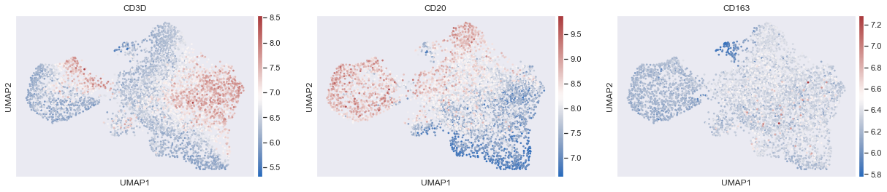
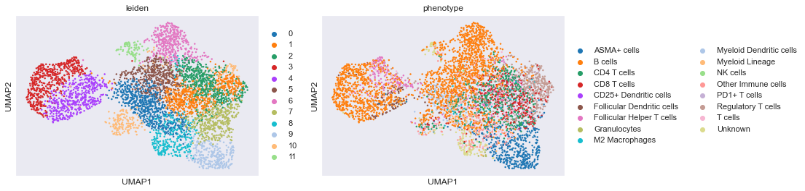
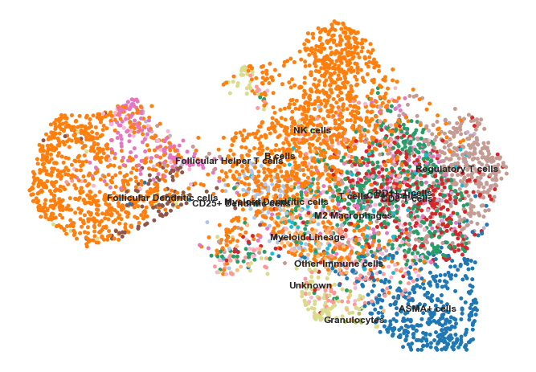
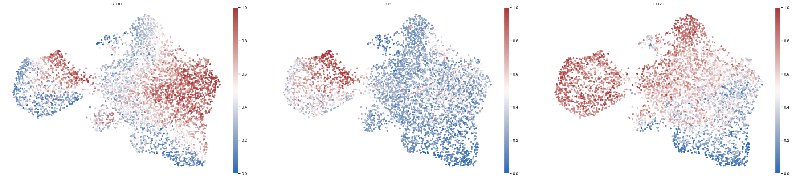

# Set the working directoryos.chdir("/Users/aj/Desktop/scimap_tutorial/")
12
# Load dataadata=ad.read('tutorial_data.h5ad')
Clustering and data exploration
You could use clustering and marker expression analysis within clusters to assign cell types similar to what is carried out with single-cell sequencing data.
1
sc.pp.neighbors(adata,n_neighbors=30,n_pcs=10)# Computing the neighborhood graph
1
sc.tl.umap(adata)# Build a UMAP to visualize the neighbourhood graph
1
sc.pl.umap(adata,color=['CD3D','CD20','CD163'],cmap='vlag',use_raw=False,s=30)# Plot the UMAP

We can already begin to spot issues with carrying out this mode of phenotyping approach. As you can see there is an area of co-expression of CD3D and CD20, which is likely because of segmentation errors. Additionally the boundaries are not distinct between cell-types and it is highly likely that errors will be introduced due to this reason.
1
sc.tl.leiden(adata,resolution=1)# Clustering the neighborhood graph
1
sc.pl.umap(adata,color=['leiden','CD3D','CD20'],cmap='vlag',use_raw=False)# View the clustering
From the above plots, it is likely that clusters 1, 2 and 7 could be combined to form a T cell cluster. However, as mentioned earlier the boundaries are not clear and it only get increasingly complex as one would want to perform deeper phenotyping such as CD4 helper T cells, CD8 T cells, regulatory T cells and so on.
Additionally, marker analsyis suggests that CD30 is most expressed in cluster 8. If you look at the actual image, you will realize that CD30 is not expressed by any cell in this image and the analysis is picking up high background fluorescence.
Probability distribution based phenotyping
This approach is more labor intensive, however is significantly more sensitive and much more scalable than clustering based approaches. Takes less than 5 mins to run over a million cells once the gates are identified.
In order to run the method, you need 2 things
a gating workflow strategy .csv file
manual gates .csv file. If manual gates are not provided, the algorithm will attempt to rescale the data by fitting two gaussians on the data. However, it is adviced to perform manual gating as I have found it to be more sensitive.
The algorithm involves three steps:
1. Identify the gates using sm.pl.gate_finder
2. Rescale the data based on the identified gates using sm.pp.rescale
3. Run the phenotyping algorithm on the rescaled data using sm.tl.phenotype
Define manual gates to rescale data before running the phenotyping algorithm
Instantiating the Qt GUI can take a few seconds and if you create the Viewer before it is finished, the kernel will die and the viewer will not launch. For this reason the %gui qt magic command should always be run in a separate cell from creating the viewer
1
%guiqt
Step 1: Identify the gates using sm.pl.gate_finder
Step 2: Rescale the data based on the identified gates using sm.pp.rescale
Note: Below we are passing a manual_gates.csv into the gate parameter.
This contatins gates that were visually determined using the sm.pl.gate_finder
function. For the markers included in the manual_gates.csv file,
the function will scale the data such that cells with expression greater than the gate
will be considered as positive for that marker and cells
with expression below the gate is considered negative.
For markers that are not included in the manual_gates.csv file, the function
will automatically try to determine a gate by running a gaussian mixture model
algorithm on the data.
Note (for >=v.0.22.0)
Please note that passing manual gates for multiple images has been introduced in scimap >=v.0.22.0
123
# Load the manual gates and rescale the data based on the gatesmanual_gate=pd.read_csv('manual_gates.csv')adata=sm.pp.rescale(adata,gate=manual_gate)
# View the scaled data (note that the log data is replaced with scaled data)# If you ever want the log data back you will need to run- np.log1p(adata.raw.X)adata.X
It is likely that CD25+ Dendritic cells, NK cells & Granulocytes are artifacts. You could set pheno_threshold_abs= 10 to move these cells into unknown category.
Once the phenotyping is performed, it is adviced to overlay the phenotypes on the image and check if they are correct. If not, alter the phenotyping workflow file or the manual gate to account for the errors.
sc.pl.umap(adata,color=['leiden','phenotype'])# View the clustering

12
sns.set(rc={'figure.figsize':(11.7,8.27)})sc.pl.umap(adata,color=['phenotype'],legend_loc='on data',title='',frameon=False,s=100)# View the clustering

1
sc.pl.umap(adata,color=['CD3D','PD1','CD20'],cmap='vlag',use_raw=False,frameon=False,s=100)# View the clustering

As it can be seen from above 3 UMAP's it would have been very difficult to find the Follicular helper T cells by a pure clustering approach. Also, the B cells as can be seen above does not from a nice seperate cluster. These among other illustrate the importance of using the probability based algorithm for deep phenotyping.
12345
# Confirm Follicular helper T cells in the imagesm.pl.image_viewer(image_path,adata,overlay='phenotype',overlay_category=['Follicular Helper T cells'],markers=['CD3D','CD20','PD1','CD8A','CD4','DNA11'],point_color='white',point_size=6)
12
# Save the resultsadata.write('tutorial_data.h5ad')